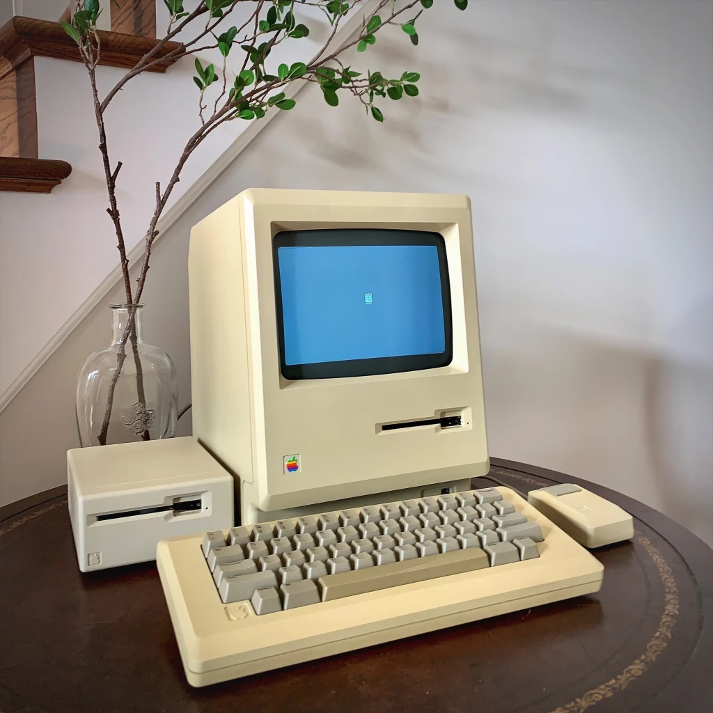

Steve Wozniak
Home
Quotes
"The Woz"

Why is he famous?
He is the pioneer of the personal computer revolution with hlp of Steve Jobs
Creator of the Apple I
Co-creator and lead developer of the Apple II
Co-creator and co-developer of the Macintosh (left)